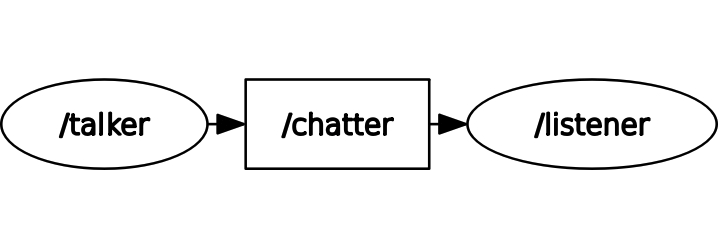

ROS & C++ Introduction
This page is meant to serve as an introduction to core ROS concepts and a little bit of C++. While this won’t serve as a full-fledged tutorial, this will get you primed for the main tutorial that you’ll work on in the next section.
This introduction is structured as follows.
0. Setup
For the purposes of this introduction, we’ll work in a completely different environment. To get started, make sure you have Docker setup. You can find more information on setting up Docker here, though you should not install the RoboCup Docker image - we’ll be using a different one.
To get the docker image, run the following in your terminal:
docker run -p 6080:80 --security-opt seccomp=unconfined --shm-size=512m ghcr.io/tiryoh/ros2-desktop-vnc:humble
You should see a container automatically generate. Click on one of the available ports, and if needed,
enter in the password ubuntu.
For this introduction, you will be working with this Docker container. The best practice for using this Docker container would be to use the Remote Explorer extension on your local copy of VSCode and write all of your code there. If there’s ever a time you need to use the terminal, you can use the terminator app in your Docker image.
To set up your local version of VSCode, head over to the Remote Explorer extension, and select
the Dev Containers option at the top. You should then see your newly added container,
which starts with ghcr.io. You should open the /home/ubuntu folder for now.
1. Trying out ROS 2
Before we actually do any coding, let’s try out some ROS 2 commands so you can start to get a feel for how this all works. Afterwards, we will explore some important ROS fundamentals.
To get started, open up 3 separate Terminator windows. Once you’ve done that:
In the first window, run:
ros2 run demo_nodes_cpp talker
In the second window, run:
ros2 run demo_nodes_cpp listener
In the third window, run:
rqt_graph
You should see 3 different things happening:
1. One terminal window is constantly printing out a Hello World message with a number.
2. Another terminal is somehow picking up the messages being outputted by the first terminal.
3. A graph that shows the relationship between the 2 commands that we just ran. (If you cannot
see both the talker and the listener, hit the refresh button at the top left of the rqt app).
2. What Just Happened?
Fundamentally, ROS is structured around these things called nodes. You can think of nodes as just independent programs running in your ROS system. Each node is designed to handle 1 specific task.
From the commands we just ran, we spun up two different nodes.
The
/talkernode. Its job was to create and broadcast a simple message over and over again.The
/listenernode. Its job is to listen for messages from the/talkernode.
We can be a bit more specific here. The /talker node is called a publisher, and the
listener node is called a subscriber. Can you infer why we call them those names?
So how exactly the /listener node get the details from the talker node? Topics.
Nodes rely on a channel to send and receive information. This channel is a topic.
In our example, the /talker node is publishing messages to the /chatter topic.
The /listener node subscribes to the /chatter topic and receives any messages
that are published to the /talker node.
Lastly, the rqt_graph let’s us see all of this visually. You should see something similar to this:

Once you feel comfortable with these ideas, do some more reading and testing with publishers, subscribers, and topics here: